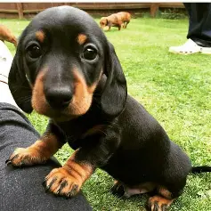
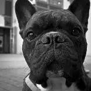

1. Proporciónales comida y agua limpia
Coloca recipientes de agua y comida en puntos seguros de tu colonia. Si puedes, abastece cada semana. Evita dejar alimentos en descomposición (cambia los platos) y usa recipientes fáciles de limpiar.
Consejo práctico: usa botellas o recipientes con peso para que no los vuelque el viento.
.webp)
Creator: AlxeyPnferov
Credit: Getty Images/iStockphoto
Copyright: AlxeyPnferov.
2. Proporciona refugio temporal
Construye una casita con caja de plástico o madera, colócala en un sitio alto o protegido de lluvia y viento. Añade una manta o material aislante. Si vives en zona fría, coloca material térmico o viruta que conserve calor.
.webp)
Foto tomada de Meganoticias: “Cajeme: Rescatan perritos abandonados que fueron encadenados a un poste”, por Luis Fernando Flores, 19-01-2025.
3. Esterilizar salva vidas
La esterilización reduce la reproducción descontrolada, controla enfermedades y mejora la calidad de vida. Infórmate sobre campañas locales (municipales, ONG o clínicas escolares) y ayuda a difundirlas.

Creator: Freepik
Credit: Freepik (www.freepik.es)
Copyright: Freepik Company S.L.U.
4. Brinda atención médica cuando puedas
Si encuentras heridas o síntomas graves (cojera, sangrado, vómito), contacta a grupos de rescate o a un veterinario. Si no hay presupuesto, documenta (fotos) y comparte en redes para pedir ayuda o donaciones.
5. Difunde en redes sociales
Publica foto, ubicación aproximada y estado del animal. Usa grupos locales y hashtags. Incluye contacto para quien quiera ayudar o adoptar.
6. Reporta el maltrato animal
Busca autoridades o asociaciones que reciban denuncias. El maltrato es delito en muchos estados: aportar pruebas (fotos o videos) ayuda a procesos legales y evita más agresiones.
7. Considera adoptar o ser hogar temporal
Ser hogar temporal mejora la salud y las posibilidades de adopción para un animal. Si adoptas, recuerda vacunas, esterilización y gastos que implican responsabilidad a largo plazo.
8. Educa a tu comunidad
Organiza charlas en escuelas, comparte folletos con recomendaciones, habla con vecinos y fomenta la responsabilidad. La educación reduce el abandono a largo plazo.
9. Crea puntos de apoyo comunitarios
Coordina con vecinos para establecer estaciones de alimento y agua, calendarios de apoyo y contactos de rescatistas. La organización local salva muchas vidas.
¿Qué hacer si encuentras un animal perdido?
Verifica placa, collar o chip (en veterinarios). Toma fotos, comparte en grupos locales y reporta a refugios. Si se ve enfermo, contacta a un rescatista o veterinario; si puedes, ofrécele un lugar temporal.

Creator: Vecteezy contributors
Credit: Vecteezy (es.vecteezy.com)
Copyright: Eezy LLC / Vecteezy.
Mitos y realidades
Mito: “Los animales se acostumbran a la calle”. Realidad: nadie debería vivir expuesto a peligros constantes. Mito: “Son agresivos”. Realidad: la mayoría solo tiene miedo; con paciencia se adaptan y son cariñosos.
Adopción responsable
Adoptar implica compromiso: vacunas, alimentación, atención veterinaria, educación y cariño. Consulta el historial del animal si lo hay y planea la adaptación. Adopta con responsabilidad, no por impulso.

Creator: Borislav Milovanovic
Credit: Dreamstime (es.dreamstime.com), ID 65657853
Copyright: © Borislav Milovanovic / Dreamstime.com